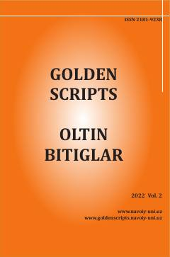

SOSo‘fi Olloyorning “Sabotul ojizin” asariga yozilgan qadimiy sharhlar tahlili.
Ushbu maqola So‘fi Olloyorning mashhur “Sabotul ojizin” asariga yozilgan sharhlar, xususan, Tojuddin Yolchiqul o‘g‘lining “Risolayi Aziza” asari tahliliga bag‘ishlangan. Muallif sharhlar orqali mumtoz matnlarning xalq uchun tushunarli bo‘lishi va ulardagi chuqur ma’nolarning ochib berilishini ilmiy nuqtai nazardan yoritadi.